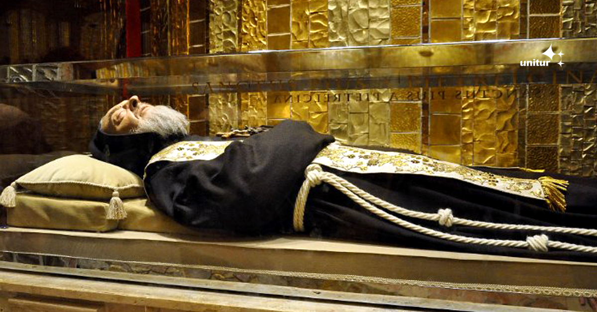

São Padre Pio ✝
A vida popular do santo que só queria ser um padre que reza.

A aproximadamente 100 km de Nápoles, no Sul da Itália, está a cidade de Pietrelcina, que atrai turistas e peregrinos do mundo todo para visitar a cidade de Francesco Forggione, sacerdote capuchinho proclamado santo pela Igreja Católica e mais conhecido como Padre Pio de Petrelcina.
Aqui a linha do tempo de vida do São Padre Pio:
- 1887Nasceu em Pietrelcina na Itália.
- 1899Primeira comunhão.
- 1903(1/janeiro) Visão que o convenceu de que sua vida seria uma contínua luta contra o maligno.
- 1904(22/janeiro) Profissão dos votos simples.
- 1905(outubro) Partida para S. Marco la Catola para estudar filosofia.
- 1906(abril) Retorno a S. Elia a Pianisi para efetuar os estudos do segundo grau.
- 1907(27/janeiro) Profissão dos votos solenes.
- 1931(25/maio) O convento de San Giovanni Rotondo é submetido à imediata jurisdição do superior geral.
- 1933(14/março) Visita do Mons. Luca Pasetto e do Mons. Felice Bevilacqua.
- 1934(25/março) Padre Pio voltou a ouvir a confissão dos homens.
- 2002(16/junho) O papa João Paulo II declarou Padre Pio “Santo”. Mais de quatrocentas mil pessoas reuniram-se na Praça de São Pedro (Vaticano), em San Giovanni Rotondo e em Pietrelcina, numa extraordinária manifestação de fé sem precedentes. Em San Giovanni Rotondo a Missa foi concelebrada por cinqüenta sacerdotes e, no momento em que Padre Pio foi proclamado santo, voaram no céu sobre a cidade: 12.327 balões azuis e amarelos (correspondentes ao número de dias desde a morte até a santificação de Padre Pio), seis milhões de pétalas de rosas e milhares de papeizinhos em que estavam escritas frases de Padre Pio. Muitas festividades foram programadas nos cinco continentes, e a canonização foi transmitida via satélite para o mundo todo.
"Ria-se dos elogios que as pessoas lhe façam, e repasse-os todos a Deus!"
Para saber mais sobre esse ser humano incrível: Clique aqui